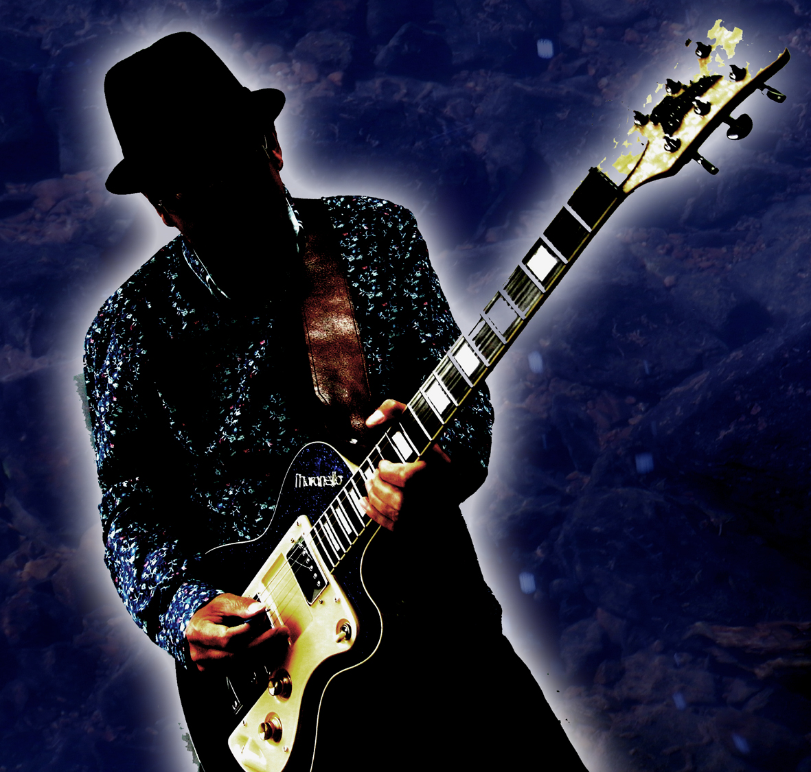

Andrew Riverstone
British Blues & Roots Guitarist/Singer/Songwriter

Andrew Riverstone's music pays homage to 60's blues guitarists Peter Green, Jeff Beck
His 2021 self titled 4th solo album was playlisted on blues radio shows
"All the instrumentation is played with skill and verve, and the guitar solos are uniformly excellent.
"Andrew Riverstone's fluent, sometimes hypnotic playing is the common thread." Roots time Belgium.
Jimmy Page, and American songwriters Neil Young, JJ Cale and Tom Petty.
across the UK, Europe, Australasia and the United States.
Lyrically, Riverstone is as agile a wordsmith as he is a musician." Blues Matters Magazine.
CD's available from the shop page.